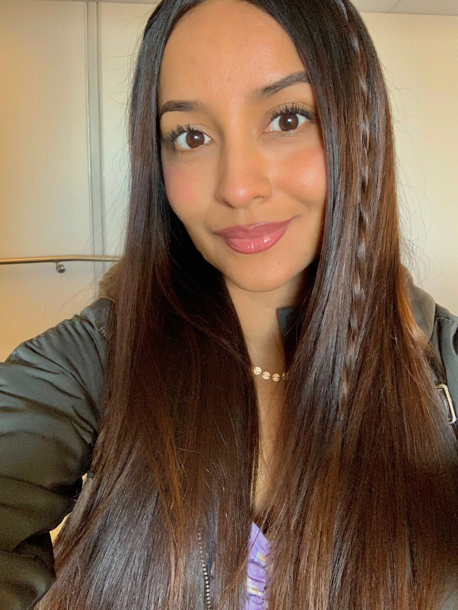

Michelle Reyes | WDD 130
Hello! My name is Michelle Reyes and I live in the United States but I am from Ecuador, Guayaquil. I served a mission for the Church of Jesus Christ of the Latter Day Saints, about 8 years ago. I had the wonderful opportunity to be a missionary in the mission Peru - Huancayo, this was a time of my life that I will never forget becasue I got closer to my Savior as I had never gotten before. After serving my mission, I got married and sealed in the Ecuador - Guayaquil Temple. In the last 3 years I have developed a real pssion for reading and exercising. Exercising has become the way I free myself from stress or any other feeling that might negatively affect me. I have a passion for everything that is related to business. However, I am currently an online Software Development student at BYU Idaho. I enjoy challenges that have the potential to enhance and increase my intellectual, and critical thinking skills, which is why I decided to study this major. As a woman, I believe that I have the responsibility to show the world that women are smart and capable. As women, we must break those societal standards that impede us from experimenting and develop our intellectual skills in fields related to science, technology, engineering, and math (STEM). It is an honor for me to be part of the women in the STEM community. My favorite hobbies are reading, exercising, and spending time with my wonderful husband.